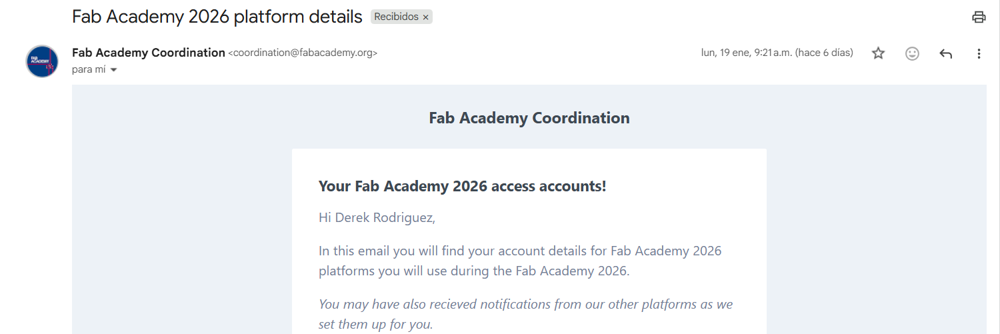
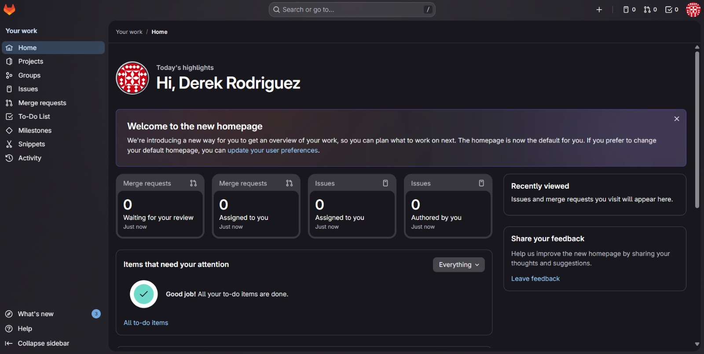
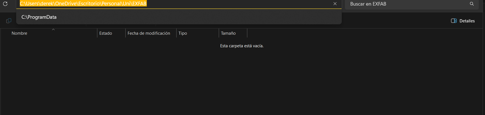
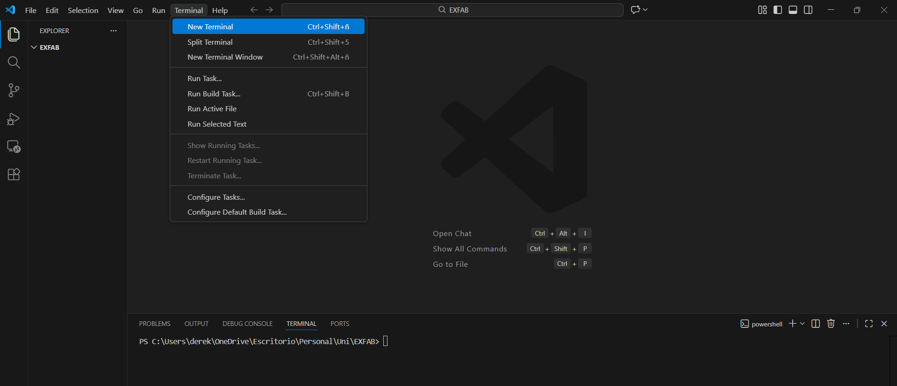
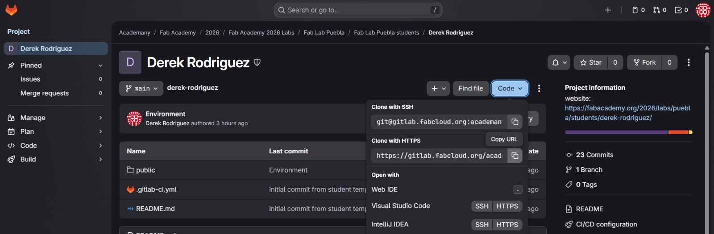
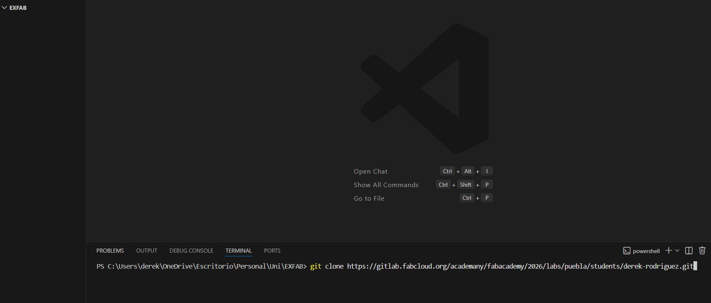
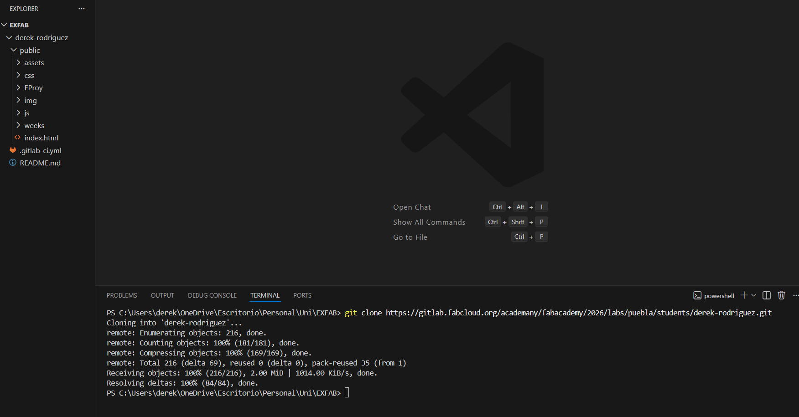
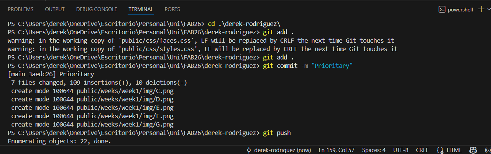
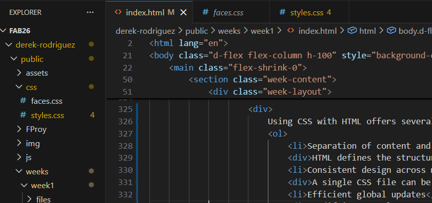

Semana 1: Introducción
Before starting
These tools enable version control, code editing, and synchronization of files throughout the documentation process.
- Visual Studio Code:
- Git:
Cloud and software connections


Git ecosystem
To connect to the Git repository, you need to install and configure Git Bash. This tool provides a terminal interface where you can run commands to manage both local files and the remote repository.
Some of the essential commands to learn early on include those used to synchronize the local repository with the cloud, upload changes, and manage version control. These basic commands are summarized in the following command blocks.
git clone "URL"
It is used to create a complete local copy of a remote repository, including all files and version history. It is typically run only once, when accessing the project for the first time.
cd "folder"
It is used to navigate to a specific directory within the terminal.
cd ..
It is used to go to the previous folder.
git add .
Adds all modified files to the staging area in preparation for a commit.
git add "name-of-file"
Is used to add a specific file to the staging area.
git commit -m "message"
Records the staged changes into the local repository by creating a new commit. The commit message provides a concise description of the changes made, helping to track the project’s development over time.
git push
Uploads the committed changes from the local repository to the remote repository hosted on the Fab Cloud.
git pull
Downloads the latest changes from the cloud repository and automatically integrates them into the local project.
- Select the local directory where the project will be stored on the computer; in this case, the “EXFAB”.
- Before, open this folder in Visual Studio Code and create a new terminal.
- At this point, we need to access to the online repository and copy the project’s repository URL.
- To verify that the process was successful, all folders and files visible in the online repository should also appear in the VS Code file explorer within the personal repository.
- To update the online repository and keep it synchronized with the local repository, the following three steps must be followed:
- Before moving on to the next step, it is essential not to delete the .gitlab-ci file, since without it we will not be able to access the cloud.



git clone https://gitlab.fabcloud.org/academany/fabacademy/2026/labs/puebla/students/derek-rodriguez.git


git add .
Adds all modified files to the staging area in preparation for a commit.
git commit -m "Prioritary"
Records the staged changes into the local repository by creating a new commit. The commit message provides a concise description of the changes made, helping to track the project’s development over time.
git push
Uploads the committed changes from the local repository to the remote repository hosted on the Fab Cloud.

HTML & CSS Basics
<!DOCTYPE html>
Declares the document type and HTML version used. It instructs the web browser to render the page according to the HTML5 standard, ensuring consistent behavior and compatibility with modern browsers.
<html>
It contains the HTML document metadata, which are <head> and <body>.
<head>
Contains the metadata of the HTML document, like:
<meta charset="utf-8">
It supports a wide range of characters, including accented letters, special symbols, and non-Latin alphabets.
<meta name="viewport" content="width=device-width, initial-scale=1, user-scalable=no">
Controls how a web page is displayed on different devices, like on mobile screens.
<title>
Defines the title of the HTML document, which appears in the browser tab.
<link>
It's used to connect external resources to an HTML document. For example, when the rel="stylesheet" attribute is specified, it links an external CSS file that defines the visual style of the web page.
<script>
It's used to embed or link JavaScript code into an HTML document. JavaScript allows adding interactivity, logic, animations, and dynamic behavior to a web page.
<body>
Contains all the visible content of the web page.
<main>
It contains the core information that is directly related to the purpose of the page.
<section>
It's a semantic container used to group related content within a page.
<div>
It's a generic block-level container used to group and organize content
<header>
Defines a header section for a document or a section.
<nav>
Defines a navigation block containing links to other parts of the page or external pages.
<h1> a <h6>
They are used to define titles and headings on a web page, helping to organize content into a clear structure. The <h1> tag represents the main and most important title of the page, while the <h2> to <h6> tags are used for subheadings and subsections with decreasing levels of importance.
<p>
It's used to define a paragraph of text.
<br>
It's used to insert a line break within text
<ul>
Defines an unordered list, which displays list items with bullet points.
<ol>
Defines an ordered list, which displays the list items in a numbered or ordered format.
<li>
It's used to define an item within a list.
<a>
It's used to create hyperlinks
<img>
It's used to embed images in a web page. Doesn't need a closing tag.
<video>
It's used to embed video content. And in the same way, it doesn't need a closing tag.
These go hand in hand with some attributes that are added to the opening tags, such as:
id
Assign a unique identifier to a single item on a page, and it must not be repeated.
class
It can be shared by multiple elements and is commonly used to group elements to apply the same styles
style
It allows you to apply inline CSS directly to an element to control its visual presentation.
src
Specifies the source file for elements such as <img>, <video>
href
It is used in the a tag to specify the page URL.
width and height
Defines the dimensions of elements such as <img> or <video>, usually in pixels, and controls how large or small the element will appear on the page.
- Separation of content and presentation
- Consistent design across multiple pages
- Efficient global updates
Below are the two CSS files used in this project:
- styles.css: This file was provided by Professor Huber Giron and contains the base styles used throughout the website.
- faces.css: This file was created during the development process and includes custom animations, such as the dancing shrimp effects, along with additional visual elements used on the website.

To conclude, whenever updates are made to the online repository, the procedures described in step 5 of the Git workflow must be followed in the specified order.